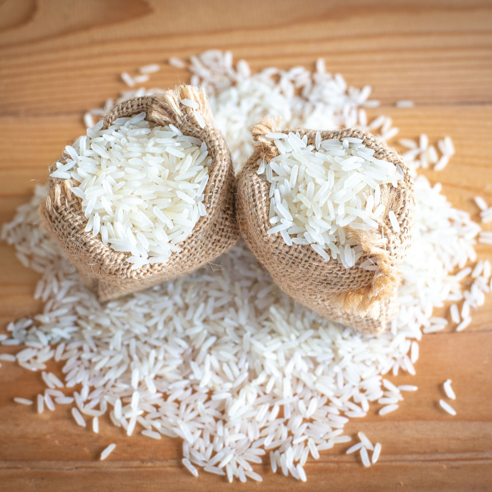
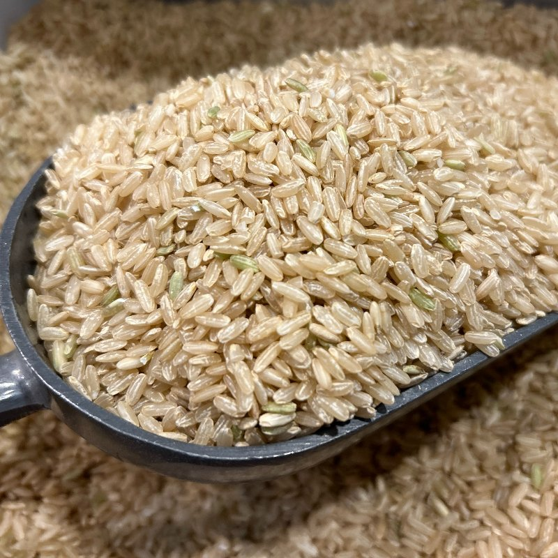
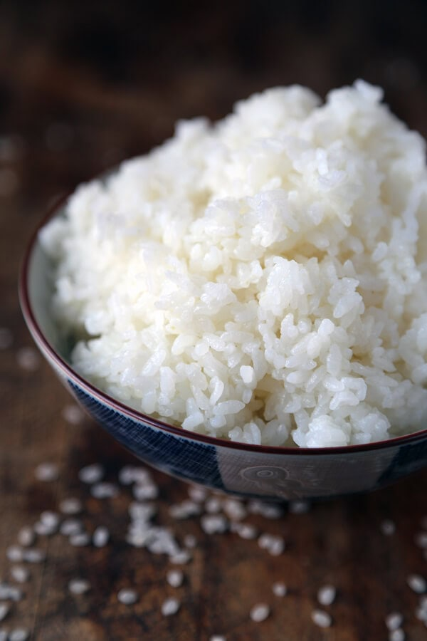

Long-grain

Long and slender grains that stay light and separate after cooking. Commonly used for dishes like Pilaf or Fried rice.

Long and slender grains that stay light and separate after cooking. Commonly used for dishes like Pilaf or Fried rice.

Slightly shorter and wider grains that cook up tender and moist. It tends to be a bit creamy, making it good for dishes like Risotto.

Small, round grains that become soft and sticky when cooked. Often used in dishes where rice needs to hold together like Sushi.